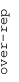
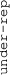

These results are also available as PDF and EPS documents.
Depending on your display resolution, scrolling or zooming may be necessary.
|  |
| 3 |
| 0 |
| -3 |
|  |
| GO:0005544 calcium-dependent phospholipid binding | |||||||||||
| GO:0007156 homophilic cell adhesion via plasma membrane adhesion molecules | |||||||||||
| GO:0006968 cellular defense response | |||||||||||
| GO:0008081 phosphoric diester hydrolase activity | |||||||||||
| GO:0022617 extracellular matrix disassembly | |||||||||||
| GO:0009972 cytidine deamination | |||||||||||
| GO:1902476 chloride transmembrane transport | |||||||||||
| GO:0006805 xenobiotic metabolic process | |||||||||||
| GO:0042626 ATPase activity, coupled to transmembrane movement of substances | |||||||||||
| GO:0004896 cytokine receptor activity | |||||||||||
| GO:0006695 cholesterol biosynthetic process | |||||||||||
| GO:0042605 peptide antigen binding | |||||||||||
| GO:0008307 structural constituent of muscle | |||||||||||
| GO:0006413 translational initiation | |||||||||||
| GO:0006122 mitochondrial electron transport, ubiquinol to cytochrome c | |||||||||||
| GO:0006888 ER to Golgi vesicle-mediated transport | |||||||||||
| GO:0031966 mitochondrial membrane | |||||||||||
| GO:0016311 dephosphorylation | |||||||||||
| GO:0006486 protein glycosylation | |||||||||||
| GO:0016829 lyase activity | |||||||||||
| GO:0043123 positive regulation of I-kappaB kinase/NF-kappaB signaling | |||||||||||
| GO:0005085 guanyl-nucleotide exchange factor activity | |||||||||||
| GO:0009968 negative regulation of signal transduction | |||||||||||
| GO:0005770 late endosome | |||||||||||
| GO:0003950 NAD+ ADP-ribosyltransferase activity | |||||||||||
| GO:0070527 platelet aggregation | |||||||||||
| GO:0070273 phosphatidylinositol-4-phosphate binding | |||||||||||
| GO:0035579 specific granule membrane | |||||||||||
| GO:0006687 glycosphingolipid metabolic process | |||||||||||
| GO:0043679 axon terminus | |||||||||||
| GO:0006996 organelle organization | |||||||||||
| GO:0005351 sugar:proton symporter activity | |||||||||||
| GO:0047372 acylglycerol lipase activity | |||||||||||
| GO:0051213 dioxygenase activity | |||||||||||
| GO:0034314 Arp2/3 complex-mediated actin nucleation | |||||||||||
| GO:0032688 negative regulation of interferon-beta production | |||||||||||
| GO:0051011 microtubule minus-end binding | |||||||||||
| GO:0045277 respiratory chain complex IV | |||||||||||
| GO:0008474 palmitoyl-(protein) hydrolase activity | |||||||||||
| GO:0031624 ubiquitin conjugating enzyme binding | |||||||||||
| GO:0032039 integrator complex | |||||||||||
| GO:0070830 bicellular tight junction assembly | |||||||||||
| GO:0002377 immunoglobulin production | |||||||||||
| GO:0042571 immunoglobulin complex, circulating | |||||||||||
| GO:1903231 mRNA binding involved in posttranscriptional gene silencing | |||||||||||
| GO:0045095 keratin filament | |||||||||||
| GO:0005549 odorant binding | |||||||||||
| GO:0050907 detection of chemical stimulus involved in sensory perception | |||||||||||
| GO:0005132 type I interferon receptor binding | |||||||||||
| GO:0005681 spliceosomal complex | |||||||||||
| GO:0005758 mitochondrial intermembrane space | |||||||||||
| GO:0070126 mitochondrial translational termination | |||||||||||
| GO:0006338 chromatin remodeling | |||||||||||
| GO:0004596 peptide alpha-N-acetyltransferase activity | |||||||||||
| GO:0061617 MICOS complex | |||||||||||
| GO:0008168 methyltransferase activity | |||||||||||
| GO:0005637 nuclear inner membrane | |||||||||||
| GO:0016874 ligase activity | |||||||||||
| GO:0006457 protein folding | |||||||||||
| GO:0043488 regulation of mRNA stability | |||||||||||
| GO:0030014 CCR4-NOT complex | |||||||||||
| GO:0008022 protein C-terminus binding | |||||||||||
| GO:0006368 transcription elongation from RNA polymerase II promoter | |||||||||||
| GO:0004843 thiol-dependent ubiquitin-specific protease activity | |||||||||||
| GO:0003725 double-stranded RNA binding | |||||||||||
| GO:0045773 positive regulation of axon extension | |||||||||||
| GO:0022604 regulation of cell morphogenesis | |||||||||||
| GO:0008565 protein transporter activity | |||||||||||
| GO:0030374 ligand-dependent nuclear receptor transcription coactivator activity | |||||||||||
| GO:0004177 aminopeptidase activity | |||||||||||
| GO:0016254 preassembly of GPI anchor in ER membrane | |||||||||||
| GO:0008180 COP9 signalosome | |||||||||||
| GO:0001682 tRNA 5'-leader removal | |||||||||||
| GO:1903912 negative regulation of endoplasmic reticulum stress-induced eIF2 alpha phosphorylation | |||||||||||
| GO:0000408 EKC/KEOPS complex | |||||||||||
| GO:0016226 iron-sulfur cluster assembly | |||||||||||
| GO:0033146 regulation of intracellular estrogen receptor signaling pathway | |||||||||||
| GO:0006103 2-oxoglutarate metabolic process | |||||||||||
| GO:0000902 cell morphogenesis | |||||||||||
| GO:0045746 negative regulation of Notch signaling pathway | |||||||||||
| GO:0006897 endocytosis | |||||||||||
| GO:0046777 protein autophosphorylation | |||||||||||
| GO:0001843 neural tube closure | |||||||||||
| GO:0000086 G2/M transition of mitotic cell cycle | |||||||||||
| GO:0006260 DNA replication | |||||||||||
| GO:0000775 chromosome, centromeric region | |||||||||||
| GO:0042254 ribosome biogenesis | |||||||||||
| GO:0009451 RNA modification | |||||||||||
| GO:0080008 Cul4-RING E3 ubiquitin ligase complex | |||||||||||
| GO:0000786 nucleosome | |||||||||||
| GO:0033063 Rad51B-Rad51C-Rad51D-XRCC2 complex | |||||||||||
| GO:1903955 positive regulation of protein targeting to mitochondrion | |||||||||||
| GO:0001078 transcriptional repressor activity, RNA polymerase II core promoter proximal region sequence-specific binding | |||||||||||
| GO:0045184 establishment of protein localization | |||||||||||
| GO:1990830 cellular response to leukemia inhibitory factor | |||||||||||
| GO:0043531 ADP binding | |||||||||||
| GO:0007076 mitotic chromosome condensation | |||||||||||
| GO:0009303 rRNA transcription | |||||||||||
| GO:0031514 motile cilium |